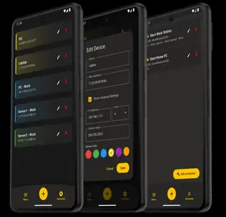

OpenWOL
أدوات النظام
OpenWOL is a simple, private and efficient Wake-on-LAN app for Android. Send a Magic Packet to any device on your local network with a single tap. No account, no cloud, no tracking — everything stays on your device and your local network. FEATURES - Send Wake-on-LAN Magic Packets to wake up devices
✓ ترخيص مفتوح (AGPL-3.0-or-later) · آخر تحديث: 2026-07-02
1.0.3الإصدار
2.5 MBالحجم
AGPL-3.0-or-laterالرخصة
Open in Kanzتحميل APK (2.5 MB)
Download APK
SHA-256: 3e293a29de3355897654483652774f421c79e2bcbb8fecf3b10f9cd05e050870

تطبيقات تانية لنفس المطوّر (2)
More apps from this developer: com.juliencardoux
امسح الكود لفتح صفحة التطبيق
Scan to open this app page
لو كنز مش متثبت عندك: نزّل متجر كنز.
Not installed? Get the Kanz store.